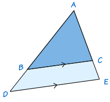
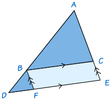
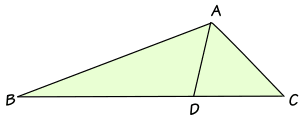
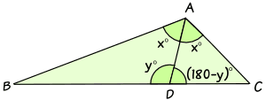
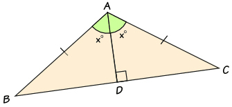
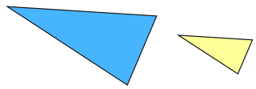
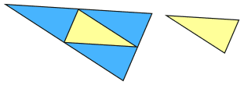
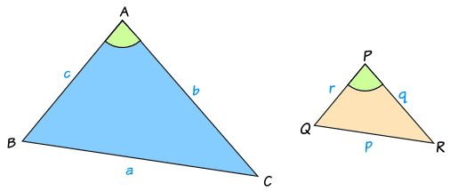

Theorems about Similar Triangles
1. The Side-Splitter Theorem

If ADE is any triangle and BC is drawn parallel to DE, then ABBD = ACCE
To show this is true, draw the line BF parallel to AE to complete a parallelogram BCEF:

Triangles ABC and BDF have exactly the same angles and so are similar (Why? See the section called AA on the page How To Find if Triangles are Similar.)
- Side AB corresponds to side BD and side AC corresponds to side BF
- So AB/BD = AC/BF
- But BF = CE
- So AB/BD = AC/CE
The Angle Bisector Theorem

If ABC is any triangle and AD bisects (cuts in half) the angle BAC, then ABBD = ACDC
To show this is true, we can label the triangle like this:

- Angle BAD = Angle DAC = x°
- Angle ADB = y°
- Angle ADC = (180−y)°
and
By the Law of Sines in triangle ACD:sin(x)DC = sin(180−y)ACMultiply both sides by AC:sin(x)ACDC = sin(180−y)1Divide both sides by sin(x):ACDC = sin(180−y)sin(x)And sin(180−y) = sin(y):ACDC = sin(y)sin(x)Which shows that both ABBD and ACDC are equal to sin(y)sin(x), so:
ABBD = ACDC
In particular, if triangle ABC is isosceles, then triangles ABD and ACD are congruent triangles

And the same result is true:
ABBD = ACDC
3. Area and Similarity
If two similar triangles have sides in the ratio x : y,
then their areas are in the ratio x2 : y2
Example:
These two triangles are similar with sides in the ratio 2:1 (the sides of one are twice as long as the other):

What can we say about their areas?
The answer is simple if we just draw in three more lines:

We can see that the small triangle fits into the big triangle four times.
So when the lengths are twice as long, the area is four times as big
So the ratio of their areas is 4:1
We can also write 4:1 as 22:1
The General Case:

Triangles ABC and PQR are similar and have sides in the ratio x:y
We can find the areas using this formula from Area of a Triangle:
Area of ABC = 12bc sin(A)
Area of PQR = 12qr sin(P)
And we know the lengths of the triangles are in the ratio x:y
q/b = y/x, so: q = by/x
and r/c = y/x, so r = cy/x
Also, since the triangles are similar, angles A and P are the same:
A = P
We can now do some calculations:
So we end up with this ratio:
Area of triangle ABC : Area of triangle PQR = x2 : y2